3Dの世界に立とう 〜街をつくる〜
🎯 この章でできるようになること
- 3Dのゲームの「X・Y・Z」の考え方がわかる
- 3Dのスターター（ひな形）から新しいプロジェクトを作れる
- 3Dの画面と2Dの画面を切りかえて、ものを置ける
- 道路と建物を並べて、自分の街を作れる
- 「アセットの交換」で、主人公を人の形のキャラに入れかえられる
この編では、3Dの街を走りまわるゲームを作ります。
最後には、車に乗ったり、ゾンビと戦ったりできるようになります。
第1回は、その舞台になる「街」を作るところからです。
1-1. 3Dのゲームってなに？
2Dのゲームは、紙の上のように「横（X）」と「縦（Y）」の2つの向きでできています。
3Dのゲームは、そこに「高さ（Z）」が加わって、3つの向きでできています。
GDevelopの3Dでは、地面が X と Y の平らな面で、Z が空に向かう高さです。
ものの位置も大きさも、この3つの数字で決まります。
1-2. 3Dのスターターから作ろう
今回はゼロからではなく、スターターから始めます。
スターターは、歩く・ジャンプする・カメラがついてくる、といった基本だけが入ったひな形です。
3Dのしくみを全部自分で作るのは大変なので、土台はスターターにまかせて、そこに街やルールを足していきます。
https://editor.gdevelop.io を開いて、ログインしていることを確かめます。
ホーム画面の左のメニューで「作成」を選び、右の「＋ 新しいゲームを作成」を押します。
「自分で作る」の列から「3D Platformer」を選ぼう。
となりの「3D Driving」や「3D First Person」ではないので注意してね。
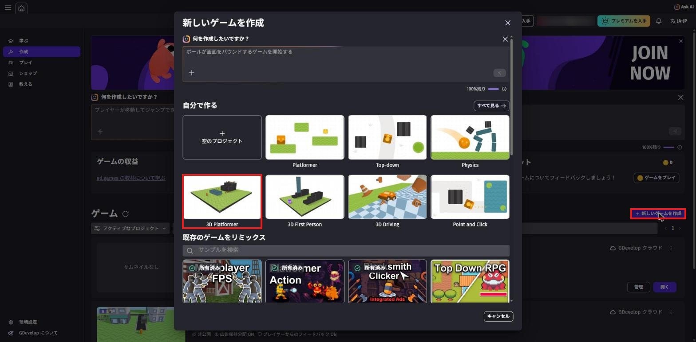
「プロジェクト名」の欄に my-zombie-city と入力します。
「このプロジェクトを保存する場所」が「GDevelop クラウド」になっていることを確かめます。
右下の「新しいゲームを作成」を押すと、エディタが開きます。
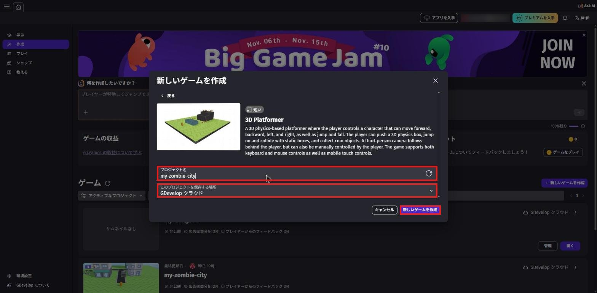
my-zombie-city、保存する場所は GDevelop クラウド「最大3のクラウドプロジェクトに達しました。」と出て作れないときは、第0章「4本目のゲームを作りたくなったら」を見てね。
1-3. まずは遊んでみよう
画面の上のまん中にある「プレビュー」を押します。
新しいタブでゲームが始まります。
3Dのゲームは、始まるまでに少し時間がかかることがあります。
| 操作 | キー・マウス |
|---|---|
| 前・うしろ・左・右に歩く | W・S・A・D |
| ジャンプ | Space（スペースキー） |
| カメラの向きを変える | 画面を1回クリックしてから、マウスを動かす |
| マウスを自由にもどす | Esc |
矢印キーでは歩かないので注意してね。
オレンジのカプセルが、このゲームの主人公（Player）です。
このカプセルは、この章の後半で人の形のキャラに入れかえます。
箱を押したり、コインを集めたりもできるので、少し遊んでみよう。
遊び終わったら、ゲームのタブを閉じてエディタにもどります。
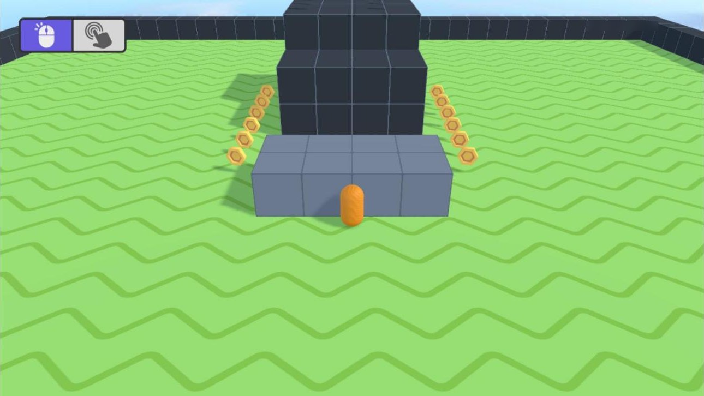
1-4. 3Dの画面を見てみよう
エディタの右上に「2D」と「3D」のボタンがあります。
「3D」を押すと、ゲームの世界をいろいろな角度から見られる3Dの画面になります。
「2D」を押すと、真上から見た平らな画面になります。
見るときは3D、ものを並べるときは2D、と使い分けると楽です。
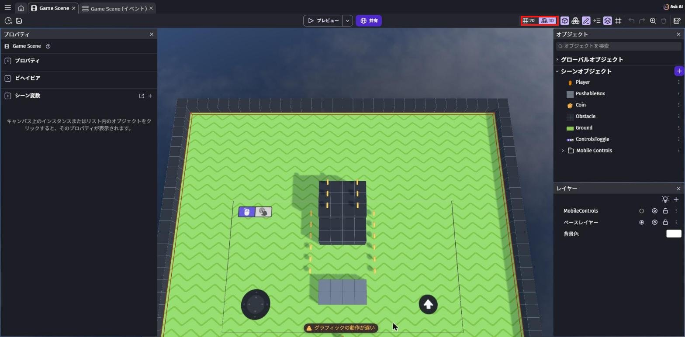
「3D」を押して、次の操作で街の中を見まわしてみよう。
| やりたいこと | 操作 |
|---|---|
| 前に進む・うしろに下がる | マウスのホイールを回す |
| 見る向きを変える | 右クリックしたままマウスを動かす |
| 前後左右に移動する | W・A・S・D（矢印キーでもOK） |
| 選んだものに近づく | ものをクリックしてから F |
迷子になったら、「2D」を押してから「3D」を押しなおすと見やすくなることがあります。
1-5. いらないものを片づけよう
スターターに入っている箱・コイン・黒い壁は、今回の街では使いません。
先に片づけて、まっさらな地面にしておきます。
上のタブで「Game Scene (イベント)」を開きます。
青い帯が5本並んでいます。
これは「グループ」といって、イベントをまとめておく入れ物です。
いちばん上の「Coins」を右クリックして、「削除」を押します。
ほかの4つ（操作やカメラのしくみ）は大事なので、消さないでね。
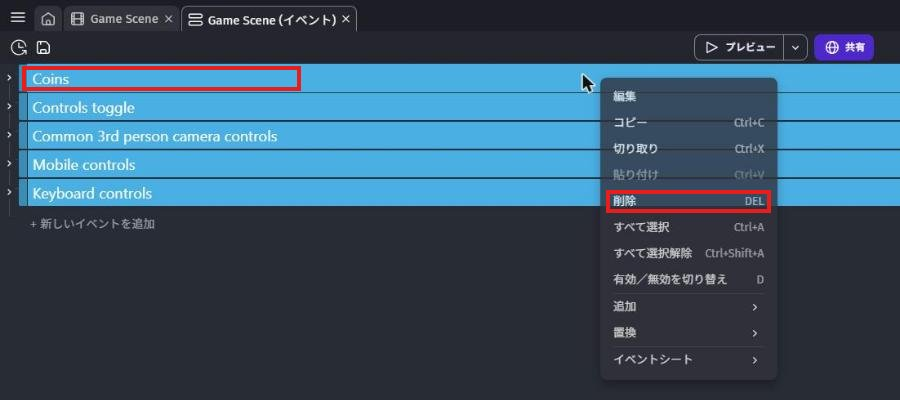
「Game Scene」のタブにもどります。
右の「オブジェクト」の一覧で「PushableBox」を右クリックして、「削除」を押します。
確認の画面が出たら「確認」を押します。
同じやり方で、「Coin」と「Obstacle」も消そう。
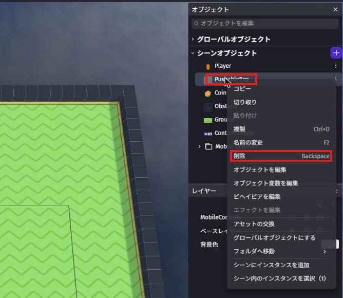
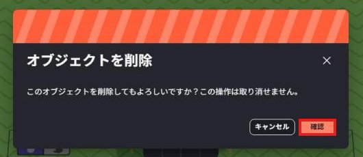
オブジェクトの一覧が、Player・Ground・ControlsToggle・Mobile Controls の4つになればOK。
ControlsToggle と Mobile Controls は、スマホ用のボタンなので残しておきます。
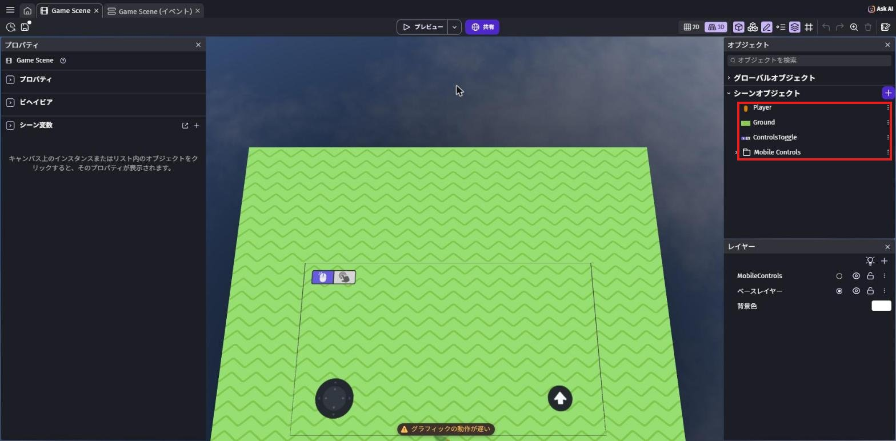
1-6. 街の材料をそろえよう
道路と建物は、アセットストアの無料の3D素材を使います。
道路は、ゾンビや車もそろっている「Zombie Apocalypse」というパックから選びます。
このパックは、この先の章でもずっと使います。
右の「オブジェクト」の「シーンオブジェクト」の右にある「＋」を押して、アセットストアを開きます。
検索の欄に zombie と入力します。
いちばん上に出る「Zombie Apocalypse」（64 アセット）のパックを押します。
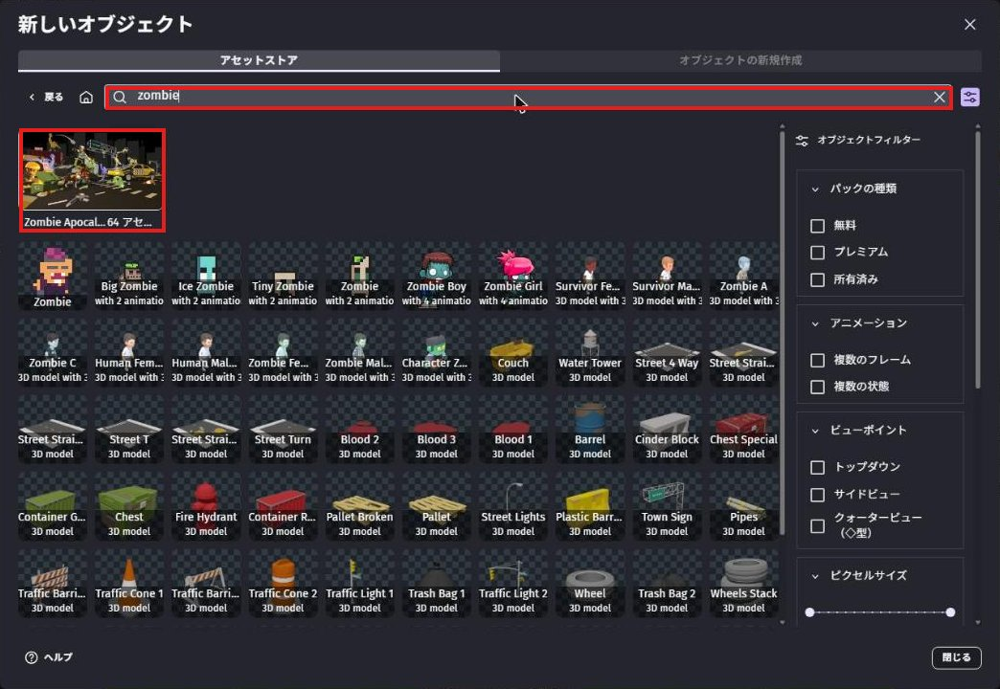
zombie で検索して「Zombie Apocalypse」（赤枠）を開くパックの中の「Ground」のフォルダを開きます。
まっすぐ・十字路・T字路・曲がり角など、道路が6種類入っています。
右下の「これらのアセットをシーンに追加」を押すと、6つまとめて追加できます。
確認の画面が出たら「アセットを追加」を押します。
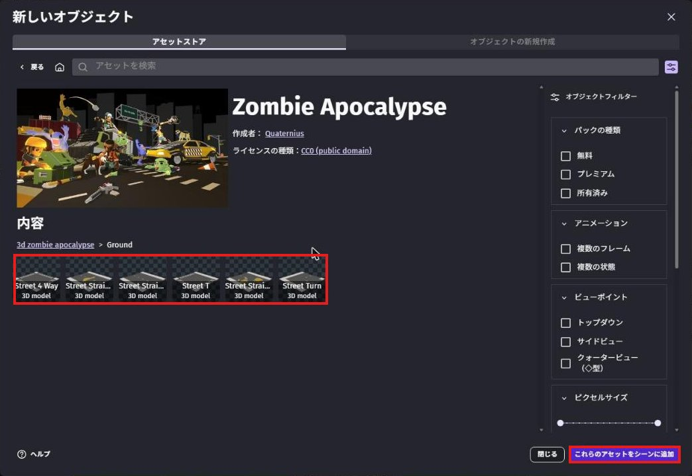
左上の家のマーク（🏠）を押して、アセットストアの最初の画面にもどります。
検索の欄に city と入力して、「City Kit (Commercial)」のパックを開きます。
中から好きな建物を1つ選んで、右下の「シーンに追加」を押します。
この教科書では「Large Building B」と「Small Building B」の2つを追加しました。
ほかの建物を選んでもOK！
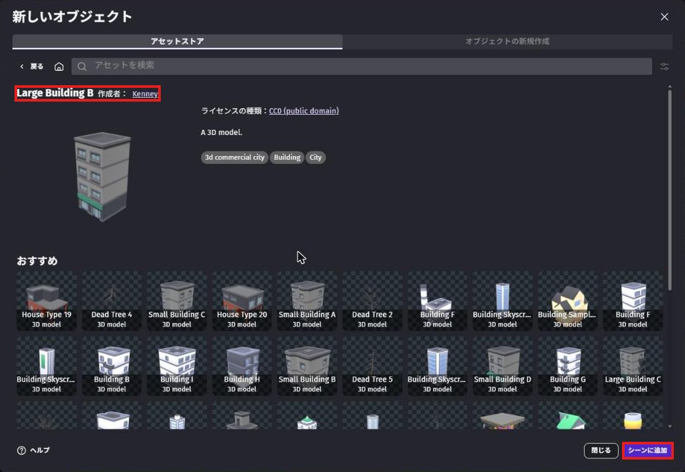
追加が終わったら、右下の「閉じる」で閉じます。
この時点では、オブジェクトが一覧に増えただけで、まだシーンには置かれていません。
自由に使ってよく、作品を公開してもOKな素材です。
1-7. 道路を並べよう
ものを並べるときは、真上から見る「2D」の画面が便利です。
右上の「2D」を押してから始めよう。
右の一覧の「Street_Straight」（まっすぐの道路）を、シーンの上にドラッグして置きます。
置いた道路をクリックすると、左の「プロパティ」に位置や大きさが出ます。
X に 640、Y に 600 と入力します。
主人公（Player）は X が 640、Y が 750 の場所にいるので、ちょうど主人公の目の前に道路ができます。
道路は、最初は横向きに置かれます。
プロパティの「回転」の欄の、いちばん右の数字を 90 にします。
道路が90度回って、主人公が歩く向き（奥）にのびる向きになります。
置いた道路をクリックして、Ctrl + C⌘ + C でコピーします。
何もない地面を1回クリックしてから、道路を置きたいあたりにマウスを持っていき、Ctrl + V⌘ + V で貼り付けます。
貼り付けた道路の X を 640、Y を 450 にします。
同じように、Y が 300 と 150 の道路も作ります。
道路1つの長さは 150 なので、Y を 150 ずつ変えると、すき間なくつながります。
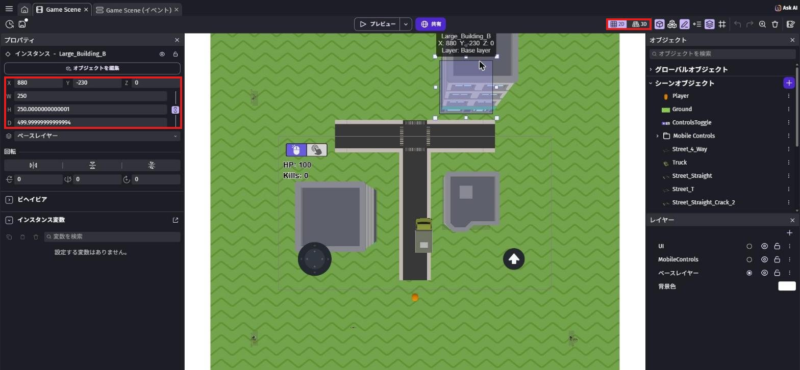
「Street_4_Way」（十字路）をドラッグして置き、X を 640、Y を 0 にします。
次に、横向きの道路を作ります。
「Street_Straight」をもう1つ置いて、X を 490、Y を 0、回転のいちばん右を 0 にします。
これをコピーして、X が 340・790・940 の道路も作ろう。
十字路から左右に道がのびて、「T」の形の道ができれば完成です。
道路と地面が同じ高さだと、プレビューで道路がチカチカして見えることがあります。
右の一覧の「Street_Straight」を右クリックして、「シーン内のインスタンスを選択」を押します。
シーンにある Street_Straight が全部選ばれます。
左のプロパティの Z を 2 にします。
「Street_4_Way」も同じように Z を 2 にしておこう。
シーンに置いた1つ1つが「インスタンス」（実物）。
同じ Street_Straight のインスタンスをいくつ置いても、オブジェクトは1つのままです。
1-8. 建物を置こう
右の一覧で「Large_Building_B」をクリックします。
左のプロパティの「デフォルトのサイズ」（最初の大きさ）の 幅 を 250 にします。
アセットストアの建物はとても大きいので、先に小さくしておくと置きやすくなります。
「Small_Building_B」も同じようにしておこう。
建物をシーンにドラッグして、道路の左右に置きます。
道路の上に重ならないように、X や Y の数字で調整しよう。
たとえば、道路の右側なら X を 880 くらいにすると、道路にかかりません。
建物がうまくクリックできないときは、右の一覧で右クリックして「シーン内のインスタンスを選択」で選べます。
1-9. 主人公を人の形にしよう
今の主人公（Player）は、オレンジのカプセルです。
街を歩くのにぴったりな、人の形のキャラに入れかえます。
ここで使うのは「アセットの交換」という機能です。
名前・ビヘイビア・イベントはそのままで、見た目（3Dモデル）だけを別の素材に入れかえられます。
右の一覧の Player の右にある「⋮」を押します（Player を右クリックしても、同じメニューが出ます）。
メニューの中から「アセットの交換」を選びます。
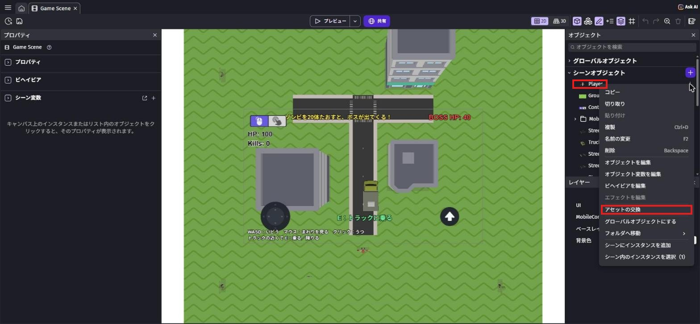
写真は完成後のプロジェクトで撮ったので、トラックや画面の文字など、あとの章で作るものも写っている
「Player を別のアセットと交換」の画面が開きます。
上の検索の欄に survivor と入力します。
「Survivor Male B」を押すと、説明の画面に変わります。
「作成者」が「Kenney」になっていることを確かめて、右下の「交換」を押します。
交換のあとに確認の画面が出たら、そのまま進めてOK。
ビヘイビアやイベントは、そのまま残ります。
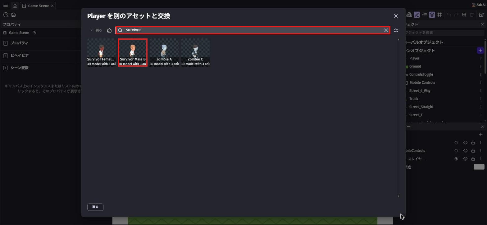
survivor で検索（上の赤枠）して、「Survivor Male B」（赤枠）を選ぶ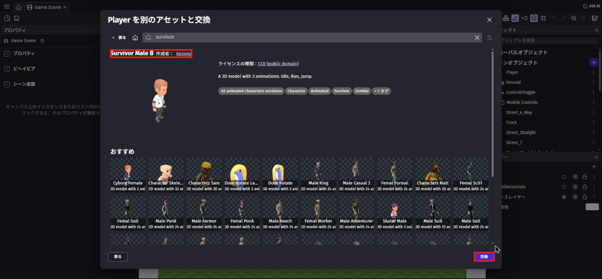
右の一覧の Player をクリックします。
左のプロパティの「3D モデル」が「Survivor Male B.glb」になっていれば、入れかえ成功です。
「デフォルトのサイズ」の 幅・高さ・奥行き を、全部 70 にします。
その下の「アスペクト比を維持するために初期寸法を小さくする」は、ON のままでOK。
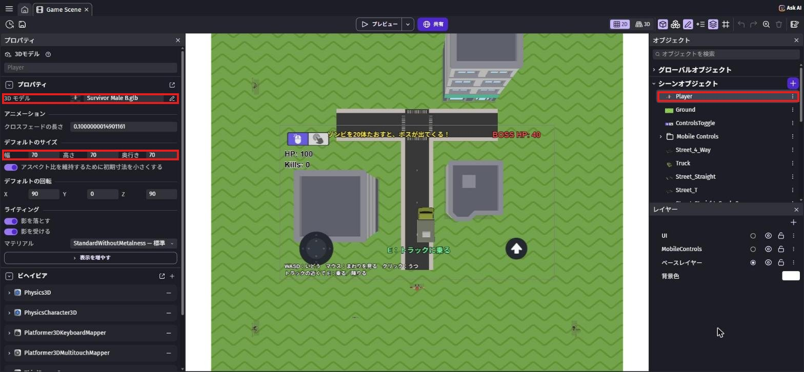
70 に（まん中の赤枠）。写真は完成後のプロジェクトで撮ったもの
ライセンスは CC0 なので、自由に使えます。
「Idle」（立っている）・「Run」（走る）・「Jump」（ジャンプ）の3つのアニメーション（動き）が、はじめから入っています。
走るときと止まるときで動きを切りかえるしくみは、第2章で作ります。
1-10. 自分の街を歩こう
左上の保存のボタン（💾）を押して保存します。
「プレビュー」を押して、自分の作った街を歩いてみよう。
主人公が人の形になっていて、W で道路を進んで十字路まで行けたら成功です！
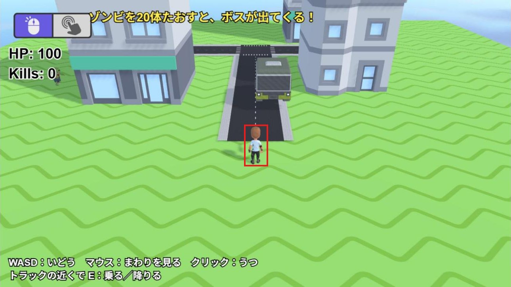
写真は完成したゲームで撮ったので、トラック・上の文字・HP・Kills・左下の操作説明は、あとの章で作るもの（今は出なくてOK）
建物にぶつかってもすり抜けてしまうのは、まだ「かたいもの」の設定をしていないからです。
これは第6章で直します。
💪 やってみよう
T字路（Street_T）や曲がり角（Street_Turn）も使って、道路をもっとのばしてみよう。
建物も増やして、自分だけの街にしよう。
ヒント
曲がり角は、回転のいちばん右を 90・180・270 と変えると、曲がる向きを変えられます。
地面（Ground）は、X が -320 から 1600、Y が -576 から 1152 までの広さです。
その外に置くと、地面がない場所になるので気をつけてね。
1-11. 🚨 つまずきポイント集
3Dの画面で、ものをクリックしても選べない
原因: 地面や別のものが、先に選ばれてしまっている。
直し方: 右上の「2D」を押して、真上から見た画面で選ぼう。
それでも選べないときは、右の一覧で右クリックして「シーン内のインスタンスを選択」を使います。
道路がチカチカする
原因: 道路と地面が同じ高さで重なっている。
直し方: 手順14のとおり、道路の Z を 2 にしよう。
プレビューがカクカクする／「グラフィックの動作が遅い」と出る
原因: 3Dは2Dよりも、PCの力をたくさん使う。
直し方: ほかのタブやアプリを閉じてから、もう一度プレビューしよう。
ノートPCなら、電源につなぐと速くなることがあります。
それでも重いときは講師に相談してね。
まちがえて大事なものを消した／動かした
原因: 操作のミス。
直し方: 右上の「↶」（元に戻す）か、Ctrl + Z⌘ + Z で戻せます。
何回か前の操作までまとめて戻ることがあるので、戻したあとは画面をよく見て確かめよう。
道路を貼り付けたのに増えない
原因: 数字の欄に文字を入れたあとで、カーソルが欄に残っている。
直し方: 何もない地面を1回クリックしてから、貼り付けよう。
主人公がとても大きい・とても小さい
原因: 交換したあと、主人公の大きさを決めていない。
直し方: 手順19のとおり、Player の「デフォルトのサイズ」の 幅・高さ・奥行き を、全部 70 にしよう。
主人公がカプセルのまま変わらない
原因: 「交換」を押す前に画面を閉じた、または別のオブジェクトで「アセットの交換」をした。
直し方: 右の一覧の Player の「⋮」から、もう一度「アセットの交換」をやり直そう。
左のプロパティの「3D モデル」が「Survivor Male B.glb」になっていればOK。
1-12. ✅ チェックリスト
全部チェックできたら第1章クリア！
🎉 次回は、街にトラックを置いて、乗って運転できるようにするよ。
主人公が走るときの動き（アニメーション）もつけるよ。